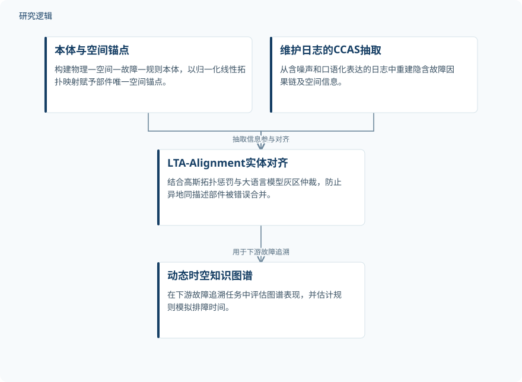

摘要解读
面向带式输送机维护知识图谱的线性拓扑感知对齐框架
A Linear Topology-Aware Alignment Framework for Belt Conveyor Maintenance Knowledge Graph.
解读更新 2026-11-14 11:49 · 依据公开摘要整理，未核验全文细节
长距离带式输送机上，描述相似的部件未必位于同一位置，维护知识图谱因此容易把不同实体错误合并。这项研究把线性空间拓扑与大语言模型推理结合起来，尝试让故障知识既能理解日志语义，也能保留设备的物理位置。
文章目录
部件描述相似，不等于物理实体相同
研究针对长距离带式输送机维护知识图谱中的空间混淆与语义塌缩问题：高度同质化的部件可能具有相似描述，却处在不同物理位置；维护日志又包含噪声和口语化表达，使隐含故障因果链与空间信息难以提取。本文关注的是如何同时保留“说的是什么”和“发生在哪里”。
用空间锚点约束语义抽取与实体对齐
框架构建了“物理—空间—故障—规则”本体，通过归一化线性拓扑映射，为高度同质化的部件赋予唯一空间锚点。面向非结构化维护日志，Condition–Constraint–Action–Space（CCAS，条件—约束—动作—空间）抽取机制用于重建隐含故障因果链及空间信息。
实体对齐环节采用LTA-Alignment算法，将高斯拓扑惩罚与大语言模型灰区仲裁结合，防止语义相似但位置不同的部件被错误合并。研究还结合维护日志、BOM记录、空间锚点及闭环维修证据，建立了结构化金标准标注协议。
依据摘要整理的空间约束与知识对齐示意


概括摘要明确描述的方法关系，不代表论文原图，也不补充未报告的实验配置。
下载 SVG图示关系说明
实线表示相邻阶段的信息流，虚线表示跨阶段联系或反馈。
本体与空间锚点 → LTA-Alignment实体对齐：引入空间拓扑约束；维护日志的CCAS抽取 → LTA-Alignment实体对齐：抽取信息参与对齐；LTA-Alignment实体对齐 → 动态时空知识图谱：用于下游故障追溯
抽取、合并与故障追溯均报告了提升
摘要报告，在三次预定义运行中，CCAS的全局F1得分为94.10 ± 0.56%，比T5高6.20个百分点。LTA-Alignment的合并F1得分为95.75 ± 0.53%，实体簇纯度为96.70 ± 0.53%，分别比SCSA高3.36和3.90个百分点。
下游故障追溯中，动态时空知识图谱的Accuracy@1为92.78 ± 0.36%，比R-GCN高10.16个百分点。相较关键词检索，基于规则的模拟排障时间估计减少68.50 ± 0.73%。这项时间收益来自规则模拟，不能直接理解为现场维修耗时已经同比下降。
结果适用于已评估的非分支输送机场景
当前解读仅依据完整摘要。摘要未交代日志与设备样本规模、数据划分、各基线的配置及比较条件，也未解释“±”对应的统计量，因此无法据此判断数据覆盖度、比较公平性与统计不确定性的完整含义。
摘要将结论限定于已评估的非分支带式输送机维护场景，尚不足以判断对分支拓扑、其他设备或跨现场数据的适用性。现场排障效率是否得到验证，也不能从模拟时间结果推出；这些属于摘要无法判断的范围，而非断言论文没有开展相关工作。
阅读启发：关注空间约束如何影响实体判断
阅读启发：这项工作值得关注的不是单独增加语言理解能力，而是把物理位置引入实体身份判断。进一步阅读时，可重点核对空间锚点如何定义、拓扑惩罚与灰区仲裁如何配合，以及闭环维修证据怎样参与金标准标注；这些细节有助于理解报告的性能收益及其适用边界。
以上为本站阅读启发与建议，不是论文已验证的结论。